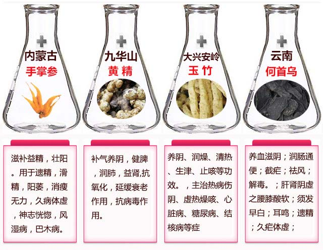

补肾小常识：正常男人性生活，持续时间为20分钟左右， 啪啪的时间长短，以及是否坚硬，和男人的肾器官是紧密相连的，男人的肾就好比汽车的发动机，1.5的排量和5.0的排量，无论是起动，还是爬坡都相差很大。
随着年龄的增加，或者是不良的生活习惯，导致肾器官进入提前衰老阶段，阳痿早泄，肾虚肾寒，前列腺，疲软无力的症状就相继出现了，男人就会提前“变老”！
阳痿早泄，肾虚肾寒，腰疼膝软，前列腺，疲软无力.......这其实都是肾进入早衰的现象！想摆脱肾虚困扰的朋友们一定要仔细往下看！
很多人不懂补肾壮阳。吃了各种各样的产品，用错方法白白遭了好多罪！
中医认为！肾为先天之本， 肾藏精，主生长发育：肾主藏精，以气为用，关系着人的生长发育。肾气盛衰直接关系到人的生长发育，乃至衰老的全过程，也关系着人的生殖能力！
肾是男人的命根子，肾也是女人健康美丽的总管家，控制着身体的内分泌，所以说，无论是男人还是女人，肾是人的先天之本！男人30岁之后，肾开始老化，而且阳痿早泄的情况也出现了，大部分男性朋友采用的调理方法都不科学，阳痿了，就吃伟哥，或者是情趣店里买的各种三无产品和激素，殊不知，这些都不能根除，而且长期使用对身体副作用都很大，千万别让这些激素把你的身体“掏空”，男人要想壮阳延时，补肾养气才是根本之道！
很多阳痿早泄问题都是肾早衰引起的，根据病症的程度分成几个等级，这里也特地整理了一下！大家可以自查看看，要是符合其中的一项，说明身体已经向你拉响警报，该调理了！
1、 肾亏
肾亏期，多数病人有精神萎靡、腰酸腰痛，体力不支，睡眠不佳(包括失眠、多梦、嗜睡)、性功能减退等症状。
2、 肾阴虚
肾阴虚时，有遗精、尿量多或尿如脂膏、头晕目眩、耳鸣等症状，严重时有耳聋、口干、盗汗、低热、颧红，手足心热等现象。
3、 肾阳虚
肾阳虚时，有腰酸腰痛，性欲减退、滑精、早泄、阳痿等。

男性朋友一定要注意！如果肾出现问题，一定要尽早调理，否则不仅会影响自己下半生的幸福，更会引发一系列危害，严重的甚至会影响下一代健康！ 千万别等到去了医院花了钱，费了时间，遭了罪，才后悔没早早调理！
在微信中搜索：
谷方益元健康管理团队在朋友圈分享了很多壮阳的方法,包括怎么延时。
加微信获取一对一指导：
(长按复制)
注意：补肾壮阳问题各不相同，一对一咨询了解清楚各种病症的原因，才能对症滋补，从根源调理！
肾出问题了，从根源滋补肾，修复肾，才能真正解决问题，内调方能外养，肾健康了不光是延时壮阳好，人也会变的有精神！千万别急于求成走到以下误区：
误区1、在路边情趣店买假药吃：所有路边开的情趣店里买到口服的，里面全有激素，基本上就像电视里曝光的，里面全是“兽药”，把“兽药”给男人吃，长期这样下去，破坏人体细胞，还会对胃、脏器都有一定的损害，这些假药里面含激素太高，慢慢还会得骨质疏松。
误区2、吃保健品就能补肾壮阳：市场上的保健品基本都是炒作用的，基本上是没有什么功效，如果真有功效，国家为什么不给他批一个国药准字的批号，而是只给一个保健食品的批号，大家细想一下就明白了。
误区3、吃人参，锁阳，肉苁蓉等就能壮阳：民间一直都认为这些补品有很强大的补气补肾功效，其实不然。对于气血亏空的人来说，身体虚弱，无法全面吸收这些营养，导致虚不受补。而且血液匮乏跟不上气的运行，反而让人更加虚弱！
很多人都想知道怎么样才能彻底调理好肾，平时也吃些人参、锁阳、肉苁蓉什么的经常进补，怎么就不见效果呢？
“ 别以为吃人参、锁阳、肉苁蓉就补了肾，其实配方剂量都不讲究的乱补，效果还不如一只老母鸡！你这样漫无目的乱吃乱补，不光不对症，吃进去的食物也没法吸收掉。效果没法把握不说，反而浪费时间，拖重病情， 让肾气更加匮乏，加速肾早衰不说，还让身体越来越下滑！”
那些因为肾虚，阳痿早泄等问题困扰的朋友们，坚持用此方法三四个月，症状就基本消失了！
而且坚持用会对朋友们有非常好的保养效果！自己也天天用这个方子， 人精神，身体很少生病！整个人的精神头特别足！ 心情也是非常的好！
在微信中搜索：
朋友们知道吗？优选的材料才能配伍出好的东西！
那些精挑细选的玉竹、黄精、何首乌等等
谷方益元健康管理团队的微信朋友圈里都有分享
加微信获取一对一指导：
(长按复制)
这个方子对阳痿早泄的作用可大着呢：
阳痿早泄、前列腺、肾虚、肾寒、精血不足、筋骨酸痛
这些症状都是由肾器官功能降低，衰老导致的 ！肾虚分肾阴虚和肾阳虚，要根据不同的症状做不同的调理。肾虚多为长期积累成疾，切不可因急于求成而用大补之品进补，或者用成份不明的补肾壮阳物物。应慢慢调理。所以每个客户都要了解情况，进行针对性的配伍，才能达到更好的效果，

谷方益元健康管理为你定制 专属补肾壮阳方案
↓长按下方微信号可复制↓
| 添加老师微信： (长按复制微信号) 去微信>> |